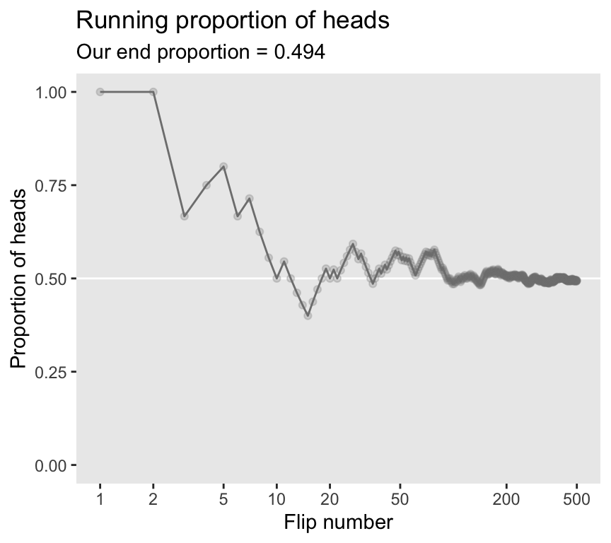
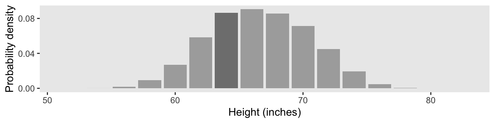
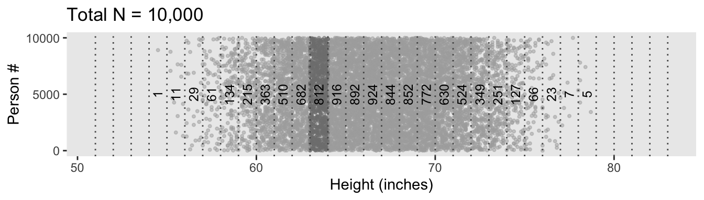
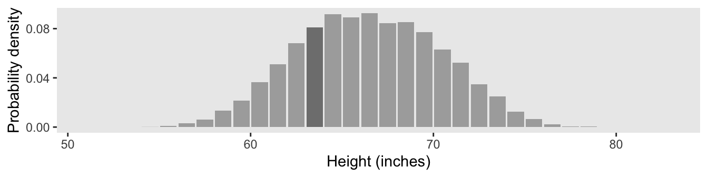
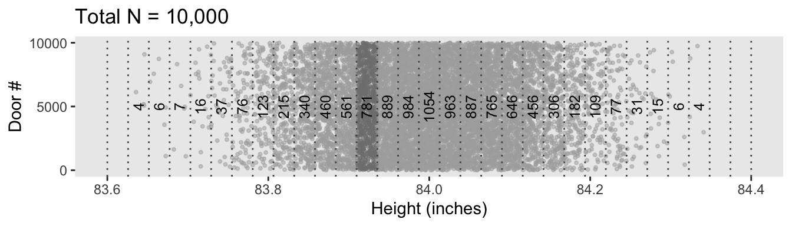
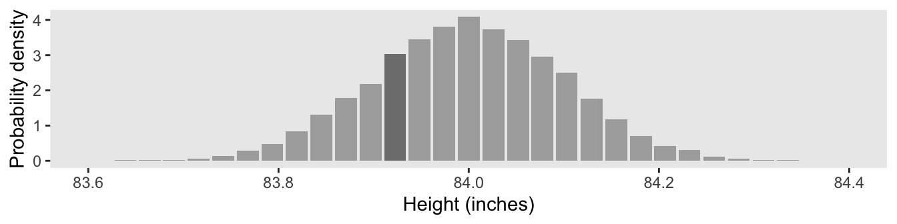
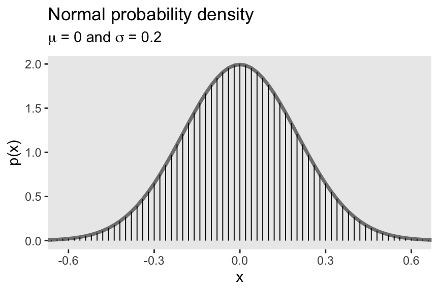
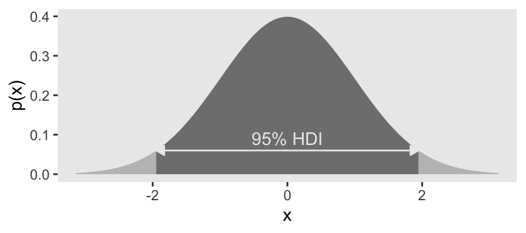
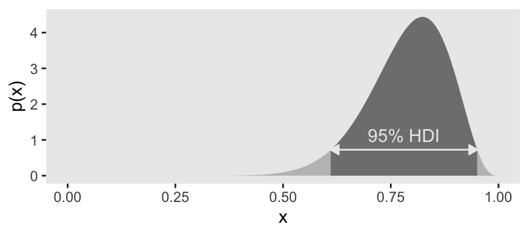
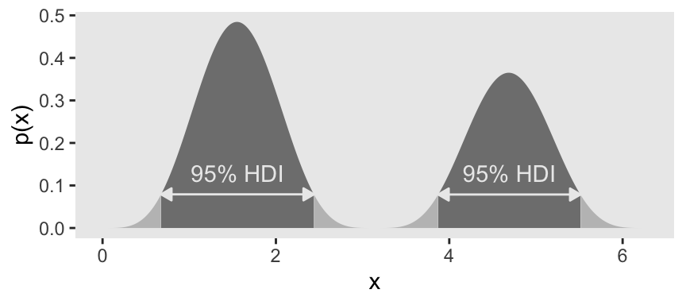

library(tidyverse)
library(santoku)
library(janitor)4 What is This Stuff Called Probability?
Inferential statistical techniques assign precise measures to our uncertainty about possibilities. Uncertainty is measured in terms of probability, and therefore we must establish the properties of probability before we can make inferences about it. This chapter introduces the basic ideas of probability. (Kruschke, 2015, p. 71, emphasis in the original)
4.1 The set of all possible events
This snip from page 72 is important (emphasis in the original):
Whenever we ask about how likely an outcome is, we always ask with a set of possible outcomes in mind. This set exhausts all possible outcomes, and the outcomes are all mutually exclusive. This set is called the sample space.
4.2 Probability: Outside or inside the head
It’s worthwhile to quote this section in full.
Sometimes we talk about probabilities of outcomes that are “out there” in the world. The face of a flipped coin is such an outcome: We can observe the flip, and the probability of coming up heads can be estimated by observing several flips.
But sometimes we talk about probabilities of things that are not so clearly “out there,” and instead are just possible beliefs “inside the head.” Our belief about the fairness of a coin is an example of something inside the head. The coin may have an intrinsic physical bias, but now I am referring to our belief about the bias. Our beliefs refer to a space of mutually exclusive and exhaustive possibilities. It might be strange to say that we randomly sample from our beliefs, like we randomly sample from a sack of coins. Nevertheless, the mathematical properties of probabilities outside the head and beliefs inside the head are the same in their essentials, as we will see. (pp. 73–74, emphasis in the original)
4.2.1 Outside the head: Long-run relative frequency
For events outside the head, it’s intuitive to think of probability as being the long-run relative frequency of each possible outcome…
We can determine the long-run relative frequency by two different ways. One way is to approximate it by actually sampling from the space many times and tallying the number of times each event happens. A second way is by deriving it mathematically. These two methods are now explored in turn. (p. 74)
4.2.1.1 Simulating a long-run relative frequency
Before we try coding the simulation, we’ll first load the primary packages.
Now run the simulation.
n <- 500 # Specify the total number of flips
p_heads <- 0.5 # Specify underlying probability of heads
# Kruschke reported this was the seed he used at the top of page 94
set.seed(47405)
# Here we use that seed to flip a coin n times and compute the running proportion of heads at each flip.
# We generate a random sample of `n` flips (heads = 1, tails = 0)
d <- tibble(flip_sequence = sample(x = c(0, 1),
prob = c(1 - p_heads, p_heads),
size = n,
replace = T)) |>
mutate(n = 1:n,
r = cumsum(flip_sequence)) |>
mutate(run_prop = r / n)
# Save the final proportion as an external value
end_prop <- d |>
slice_max(n) |>
pull(run_prop) |>
round(digits = 3) Now we’re ready to make Figure 4.1.
d |>
filter(n < 1000) |> # This step cuts down on the time it takes to make the plot
ggplot(aes(x = n, y = run_prop)) +
geom_hline(yintercept = 0.5, color = "white") +
geom_line(color = "grey50") +
geom_point(color = "grey50", alpha = 1/4) +
scale_x_log10(breaks = c(1, 2, 5, 10, 20, 50, 200, 500)) +
coord_cartesian(xlim = c(1, 500),
ylim = c(0, 1)) +
labs(x = "Flip number",
y = "Proportion of heads",
title = "Running proportion of heads",
subtitle = paste("Our end proportion =", end_prop)) +
theme(panel.grid = element_blank())
4.2.1.2 Deriving a long-run relative frequency
Sometimes, when the situation is simple enough mathematically, we can derive the exact long-run relative frequency. The case of the fair coin is one such simple situation. The sample space of the coin consists of two possible outcomes, head and tail. By the assumption of fairness, we know that each outcome is equally likely. Therefore, the long-run relative frequency of heads should be exactly one out of two, i.e., \(1/2\), and the long-run relative frequency of tails should also be exactly \(1/2\). (p. 76)
4.2.2 Inside the head: Subjective belief
To specify our subjective beliefs, we have to specify how likely we think each possible outcome is. It can be hard to pin down mushy intuitive beliefs. In the next section, we explore one way to “calibrate” subjective beliefs, and in the subsequent section we discuss ways to mathematically describe degrees of belief. (p. 76)
4.2.3 Probabilities assign numbers to possibilities
In general, a probability, whether it’s outside the head or inside the head, is just a way of assigning numbers to a set of mutually exclusive possibilities. The numbers, called “probabilities,” merely need to satisfy three properties (Kolmogorov & Bharucha-Reid, 1956):
- A probability value must be nonnegative (i.e., zero or positive).
- The sum of the probabilities across all events in the entire sample space must be \(1.0\) (i.e., one of the events in the space must happen, otherwise the space does not exhaust all possibilities).
- For any two mutually exclusive events, the probability that one or the other occurs is the sum of their individual probabilities. For example, the probability that a fair six-sided die comes up \(3\)-dots or \(4\)-dots is \(1/6 + 1/6 = 2/6\).
Any assignment of numbers to events that respects those three properties will also have all the properties of probabilities that we will discuss below. (pp. 77–78, emphasis in the original)
4.3 Probability distributions
“A probability distribution is simply a list of all possible outcomes and their corresponding probabilities” (p. 78, emphasis in the original)
4.3.1 Discrete distributions: Probability mass
When the sample space consists of discrete outcomes, then we can talk about the probability of each distinct outcome. For example, the sample space of a flipped coin has two discrete outcomes, and we talk about the probability of head or tail…
For continuous outcome spaces, we can discretize the space into a finite set of mutually exclusive and exhaustive “bins.” (p. 78, emphasis in the original)
In order to recreate Figure 4.2, we need to generate the heights data with height_weight_generator(), our version of Kruschke’s HtWtDataGenerator() function, which we introduced back in Section 2.3.
height_weight_generator <- function(n, male_prob = 0.5, seed = 47405) {
# Male MVN distribution parameters
height_male_mu <- 69.18; height_male_sd <- 2.87
log_weight_male_mu <- 5.14; log_weight_male_sd <- 0.17
male_rho <- 0.42
male_mean <- c(height_male_mu, log_weight_male_mu)
male_sigma <- matrix(c(height_male_sd^2, male_rho * height_male_sd * log_weight_male_sd,
male_rho * height_male_sd * log_weight_male_sd, log_weight_male_sd^2),
nrow = 2)
# Female cluster 1 MVN distribution parameters
height_female_mu_1 <- 63.11; height_female_sd_1 <- 2.76
log_weight_female_mu_1 <- 5.06; log_weight_female_sd_1 <- 0.24
female_rho_1 <- 0.41
female_mean_1 <- c(height_female_mu_1, log_weight_female_mu_1)
female_sigma_1 <- matrix(c(height_female_sd_1^2, female_rho_1 * height_female_sd_1 * log_weight_female_sd_1,
female_rho_1 * height_female_sd_1 * log_weight_female_sd_1, log_weight_female_sd_1^2),
nrow = 2)
# Female cluster 2 MVN distribution parameters
height_female_mu_2 <- 64.36; height_female_sd_2 <- 2.49
log_weight_female_mu_2 <- 4.86; log_weight_female_sd_2 <- 0.14
female_rho_2 <- 0.44
female_mean_2 <- c(height_female_mu_2, log_weight_female_mu_2)
female_sigma_2 <- matrix(c(height_female_sd_2^2, female_rho_2 * height_female_sd_2 * log_weight_female_sd_2,
female_rho_2 * height_female_sd_2 * log_weight_female_sd_2, log_weight_female_sd_2^2),
nrow = 2)
# Female cluster probabilities
female_prob_1 <- 0.46
female_prob_2 <- 1 - female_prob_1
# Randomly generate data values from those MVN distributions
if (!is.null(seed)) set.seed(seed)
datamatrix <- matrix(0, nrow = n, ncol = 3)
colnames(datamatrix) <- c("male", "height", "weight")
male_val <- 1; female_val <- 0 # Arbitrary coding values
for (i in 1:n) {
# Generate `sex`
sex <- sample(c(male_val, female_val), size = 1, replace = TRUE, prob = c(male_prob, 1 - male_prob))
if (sex == male_val) datum <- MASS::mvrnorm(n = 1, mu = male_mean, Sigma = male_sigma)
if (sex == female_val) {
female_cluster <- sample(c(1, 2), size = 1, replace = TRUE, prob = c(female_prob_1, female_prob_2))
if (female_cluster == 1) datum <- MASS::mvrnorm(n = 1, mu = female_mean_1, Sigma = female_sigma_1)
if (female_cluster == 2) datum <- MASS::mvrnorm(n = 1, mu = female_mean_2, Sigma = female_sigma_2)
}
datamatrix[i, ] <- c(sex, round(c(datum[1], exp(datum[2])), digits = 1))
}
data.frame(datamatrix)
}Now we have the height_weight_generator() function, all we need to do is determine how many values are generated and how probable we want the values to be based on those from men. These are controlled by the n and male_prob parameters.
d <- height_weight_generator(n = 10000, male_prob = 0.5, seed = 4) |>
# Add a person index
mutate(person = row_number())
d |>
head() male height weight person
1 1 76.0 221.5 1
2 0 59.5 190.0 2
3 0 60.2 117.9 3
4 1 64.1 137.7 4
5 1 69.3 147.6 5
6 1 69.1 165.9 6For Figure 4.2, we’ll discretize the continuous height values into bins with the case_when() function, which you can learn more about from hrbrmstr’s blog post, Making a case for case_when.
d_bin <- d |>
mutate(bin = case_when(
height < 51 ~ 51,
height < 53 ~ 53,
height < 55 ~ 55,
height < 57 ~ 57,
height < 59 ~ 59,
height < 61 ~ 61,
height < 63 ~ 63,
height < 65 ~ 65,
height < 67 ~ 67,
height < 69 ~ 69,
height < 71 ~ 71,
height < 73 ~ 73,
height < 75 ~ 75,
height < 77 ~ 77,
height < 79 ~ 79,
height < 81 ~ 71,
height < 83 ~ 83,
height > 83 ~ 85)
) |>
group_by(bin) |>
summarise(n = n()) |>
mutate(height = bin - 1)
d |>
ggplot(aes(x = height, y = person)) +
geom_point(aes(color = between(height, 63, 65)),
size = 3/4, alpha = 1/2) +
geom_vline(xintercept = seq(from = 51, to = 83, by = 2),
linetype = 3, color = "grey33") +
geom_text(data = d_bin,
aes(y = 5000, label = n),
size = 3.25) +
scale_y_continuous(breaks = c(0, 5000, 10000)) +
scale_color_manual(values = c("gray67", "gray50"), breaks = NULL) +
labs(x = "Height (inches)",
y = "Person #",
title = "Total N = 10,000") +
theme(panel.grid = element_blank())Because we’re simulating and we don’t know what seed number Kruschke used for his plot, ours will differ a little from his. But the overall pattern is the same.
One way to make a version of the histogram in Kruschke’s Figure 4.2.b would be to input the d data directly into ggplot() and set x = height and y = stat(density) within the aes(). Then you could set binwidth = 2 within geom_histogram() to make the bins within the histogram perform like the bins in the plot above. However, since we have already discretized the height values into bins in our d_bin data, it might make more sense to plot those bins with geom_col(). The only other step we need is to manually compute the density values using the formula Kruschke showed in Figure 4.2.b. Here’ how:
d_bin |>
# `density` is the probability mass divided by the bin width
mutate(density = (n / sum(n)) / 2) |>
ggplot(aes(x = height, y = density, fill = bin == 65)) +
geom_col() +
scale_fill_manual(values = c("gray67", "gray50"), breaks = NULL) +
scale_y_continuous("Probability density", breaks = c(0, 0.04, 0.08)) +
xlab("Height (inches)") +
coord_cartesian(xlim = c(51, 83)) +
theme(panel.grid = element_blank())
In the text, Kruschke singled out the bin for the values between 63 and 65 with an arrow. In our two plots, we highlighted that bin with shading, instead. Here’s how we computed the exact density value for that bin.
d_bin |>
mutate(density = (n / sum(n)) / 2) |>
filter(bin == 65) |>
select(n, density)# A tibble: 1 × 2
n density
<int> <dbl>
1 1726 0.0863Due to sampling variation, our density value is a little different from the one in the text.
Our data binning approach for Figure 4.2.c will be a little different than what we did, above. Here we’ll make our bins with the cut() function.
# Save the breaks as a vector
height_breaks <- 50:85
d <- d |>
mutate(bin_factor = cut(height, breaks = height_breaks))
# What?
head(d) male height weight person bin_factor
1 1 76.0 221.5 1 (75,76]
2 0 59.5 190.0 2 (59,60]
3 0 60.2 117.9 3 (60,61]
4 1 64.1 137.7 4 (64,65]
5 1 69.3 147.6 5 (69,70]
6 1 69.1 165.9 6 (69,70]The cut() function named the bins by their ranges. The parenthesis on the left and bracket on the right is meant to indicate the lower limit is closed (i.e., includes the lower limit) and the upper limit is open (i.e., does not include the upper limit). For the annotation in the plot, the next step is to compute the half-way points. One way to use str_extract() to extract the first number from bin_factor. As that will return the numbers in a character format, we can then convert them to numbers with as.double(). Finally, we can make those values half-way points by adding 0.5. We’ll save the result as bin_number.
d <- d |>
mutate(bin_number = str_extract(bin_factor, "\\d+") |> as.double() + 0.5)
# What?
head(d) male height weight person bin_factor bin_number
1 1 76.0 221.5 1 (75,76] 75.5
2 0 59.5 190.0 2 (59,60] 59.5
3 0 60.2 117.9 3 (60,61] 60.5
4 1 64.1 137.7 4 (64,65] 64.5
5 1 69.3 147.6 5 (69,70] 69.5
6 1 69.1 165.9 6 (69,70] 69.5Now we make Figure 4.2.c.
d_bin <- d |>
count(bin_factor, bin_number) |>
rename(height = bin_number)
d |>
ggplot(aes(x = height, y = person)) +
geom_point(aes(color = between(height, 63, 64)),
size = 3/4, alpha = 1/2) +
geom_vline(xintercept = 51:83,
linetype = 3, color = "grey33") +
geom_text(data = d_bin,
aes(y = 5000, label = n, angle = 90),
size = 3.25) +
scale_y_continuous(breaks = c(0, 5000, 10000)) +
scale_color_manual(values = c("gray67", "gray50"), breaks = NULL) +
labs(x = "Height (inches)",
y = "Person #",
title = "Total N = 10,000") +
theme(panel.grid = element_blank())
However, our method for Figure 4.2.d will be like what we did, before.
d_bin |>
# `density` is the probability mass divided by the bin width
mutate(density = (n / sum(n)) / 1) |>
ggplot(aes(x = height, y = density, fill = bin_factor == "(63,64]")) +
geom_col() +
scale_y_continuous("Probability density", breaks = c(0, 0.04, 0.08)) +
scale_fill_manual(values = c("gray67", "gray50"), breaks = NULL) +
xlab("Height (inches)") +
coord_cartesian(xlim = c(51, 83)) +
theme(panel.grid = element_blank())
Here’s the hand-computed density value for the focal bin.
d_bin |>
mutate(density = (n / sum(n)) / 1) |>
filter(bin_factor == "(63,64]") |>
select(n, density) n density
1 812 0.0812The probability of a discrete outcome, such as the probability of falling into an interval on a continuous scale, is referred to as a probability mass. Loosely speaking, the term “mass” refers the amount of stuff in an object. When the stuff is probability and the object is an interval of a scale, then the mass is the proportion of the outcomes in the interval. (p. 80, emphasis in the original)
4.3.2 Continuous distributions: Rendezvous with density
If you think carefully about a continuous outcome space, you realize that it becomes problematic to talk about the probability of a specific value on the continuum, as opposed to an interval on the continuum… Therefore, what we will do is make the intervals infinitesimally narrow, and instead of talking about the infinitesimal probability mass of each infinitesimal interval, we will talk about the ratio of the probability mass to the interval width. That ratio is called the probability density.
Loosely speaking, density is the amount of stuff per unit of space it takes up. Because we are measuring amount of stuff by its mass, then density is the mass divided by the amount space it occupies. (p. 80, emphasis in the original)
To make Figure 4.3, we’ll need new data.
set.seed(4)
d <- tibble(door = 1:1e4) |>
mutate(height = rnorm(n(), mean = 84, sd = 0.1))
d |>
head()# A tibble: 6 × 2
door height
<int> <dbl>
1 1 84.0
2 2 83.9
3 3 84.1
4 4 84.1
5 5 84.2
6 6 84.1To make the bins for our version of Figure 4.3.a, we could use the case_when() approach from above. However, that would require some tedious code. Happily, we have an alternative in the santoku package (Hugh-Jones, 2020), which I learned about with help from the great Mara Averick, Tyson Barrett, and Omar Wasow. We can use the santoku::chop() function to discretize our height values. Here we’ll walk through the first part.
d_bin <- d |>
mutate(bin = chop(height,
breaks = seq(from = 83.6, to = 84.4, length.out = 32),
# Label the boundaries with 3 decimal places, separated by a dash
labels = lbl_dash(fmt = "%.3f")))
head(d_bin)# A tibble: 6 × 3
door height bin
<int> <dbl> <fct>
1 1 84.0 84.013—84.039
2 2 83.9 83.935—83.961
3 3 84.1 84.065—84.090
4 4 84.1 84.039—84.065
5 5 84.2 84.142—84.168
6 6 84.1 84.065—84.090With this format, the lower-limit for each level of bin is the left side of the dash and the upper-limit is on the right. Though the cut points are precise to many decimal places, the lbl_dash(fmt = "%.3f") part of the code rounded the numbers to three decimal places in the bin labels. The width of each bin is just a bit over 0.0258.
(84.4 - 83.6) / (32 - 1)[1] 0.02580645Now to make use of the d_bin data in a plot, we’ll have to summarize and separate the values from the bin names to compute the midway points. Here’s one way how.
d_bin <- d_bin |>
count(bin) |>
separate(bin, c("min", "max"), sep = "—", remove = F, convert = T) |>
mutate(height = (min + max) / 2)
head(d_bin)# A tibble: 6 × 5
bin min max n height
<fct> <dbl> <dbl> <int> <dbl>
1 83.626—83.652 83.6 83.7 4 83.6
2 83.652—83.677 83.7 83.7 6 83.7
3 83.677—83.703 83.7 83.7 7 83.7
4 83.703—83.729 83.7 83.7 16 83.7
5 83.729—83.755 83.7 83.8 37 83.7
6 83.755—83.781 83.8 83.8 76 83.8Now we plot.
d |>
ggplot(aes(x = height, y = door)) +
geom_point(aes(color = between(height, 83.910, 83.935)),
size = 3/4, alpha = 1/2) +
geom_vline(xintercept = seq(from = 83.6, to = 84.4, length.out = 32),
linetype = 3, color = "grey33") +
geom_text(data = d_bin,
aes(y = 5000, label = n, angle = 90),
size = 3.25) +
scale_y_continuous(breaks = c(0, 5000, 10000)) +
scale_color_manual(values = c("gray67", "gray50"), breaks = NULL) +
labs(x = "Height (inches)",
y = "Door #",
title = "Total N = 10,000") +
theme(panel.grid = element_blank())
The only tricky thing about Figure 4.3.b is getting the denominator in the density equation correct.
d_bin |>
# `density` is the probability mass divided by the bin width
mutate(density = (n / sum(n)) / ((84.4 - 83.6) / (32 - 1))) |>
ggplot(aes(x = height, y = density, fill = bin == "83.910—83.935")) +
geom_col() +
scale_fill_manual(values = c("gray67", "gray50"), breaks = NULL) +
scale_y_continuous("Probability density", breaks = 0:4) +
xlab("Height (inches)") +
coord_cartesian(xlim = c(83.6, 84.4)) +
theme(panel.grid = element_blank())
Here’s the density value for that focal bin.
d_bin |>
# `density` is the probability mass divided by the bin width
mutate(density = (n / sum(n)) / ((84.4 - 83.6) / (32 - 1))) |>
filter(bin == "83.910—83.935") |>
select(bin, n, density)# A tibble: 1 × 3
bin n density
<fct> <int> <dbl>
1 83.910—83.935 781 3.03As Kruschke remarked: “There is nothing mysterious about probability densities larger than 1.0; it means merely that there is a high concentration of probability mass relative to the scale” (p. 82).
4.3.2.1 Properties of probability density functions
In general, for any continuous value that is split up into intervals, the sum of the probability masses of the intervals must be \(1\), because, by definition of making a measurement, some value of the measurement scale must occur. (p. 82)
4.3.2.2 The normal probability density function
“Perhaps the most famous probability density function is the normal distribution, also known as the Gaussian distribution” (p. 83). We’ll use dnorm() again to make our version of Figure 4.4.
tibble(x = seq(from = -0.8, to = 0.8, by = 0.02)) |>
mutate(p = dnorm(x, mean = 0, sd = 0.2)) |>
ggplot(aes(x = x)) +
geom_line(aes(y = p),
color = "grey50", linewidth = 1.25) +
geom_linerange(aes(ymin = 0, ymax = p),
linewidth = 1/3) +
labs(y = "p(x)",
title = "Normal probability density",
subtitle = expression(paste(mu, " = 0 and ", sigma, " = 0.2"))) +
coord_cartesian(xlim = c(-0.61, 0.61)) +
theme(panel.grid = element_blank())
The equation for the normal probability density follows the form
\[ p(x) = \frac{1}{\sigma \sqrt{2 \pi}} \exp \left ( - \frac{1}{2} \left [ \frac{x - \mu}{\sigma}^2 \right ] \right ), \]
where \(\mu\) governs the mean and \(\sigma\) governs the standard deviation.
4.3.3 Mean and variance of a distribution
The mean of a probability distribution is also called the expected value, which follows the form
\[E[x] = \sum_x p(x) x\]
when \(x\) is discrete. For continuous \(x\) values, the formula is
\[E[x] = \int \text d x \; p(x) x.\]
The variance is defined as the mean squared deviation from the mean,
\[\text{var}_x = \int \text d x \; p(x) (x - E[x])^2.\]
If you take the square root of the variance, you get the standard deviation.
4.3.4 Highest density interval (HDI)
The HDI indicates which points of a distribution are most credible, and which cover most of the distribution. Thus, the HDI summarizes the distribution by specifying an interval that spans most of the distribution, say \(95\%\) of it, such that every point inside the interval has higher credibility than any point outside the interval. (p. 87)
At this point in the text, Kruschke has not yet introduced how exactly to compute density intervals, such as HDIs. In the next chapter he introduced grid approximation, and he introduced analytic solutions in the chapter after that. To set up the sequence, we will use a grid approach to make the figures in this chapter, too.
# Gaussian population values
mu <- 0
sigma <- 1
# Set a large number of grid values
seq_length <- 2001
d <- data.frame(
example = "normal",
x = seq(from = mu - pi * sigma, to = mu + pi * sigma, length.out = seq_length)) |>
mutate(density = dnorm(x = x, mean = mu, sd = sigma))
head(d) example x density
1 normal -3.141593 0.002869146
2 normal -3.138451 0.002897590
3 normal -3.135309 0.002926286
4 normal -3.132168 0.002955237
5 normal -3.129026 0.002984446
6 normal -3.125885 0.003013913If you have a data grid with x and probability values, you can compute the HDI region with Kruschke’s HDIofGrid() function, the original code for which you can find in Kruschke’s HtWtDataGenerator.R script. Here we’ll use a variant of that function called in_hdi_grid().
in_hdi_grid <- function(p_vec, prob = 0.95) {
sorted_prob_mass <- sort(p_vec, decreasing = TRUE)
hdi_height_idx <- min(which(cumsum(sorted_prob_mass) >= prob))
hdi_height <- sorted_prob_mass[hdi_height_idx]
return(p_vec >= hdi_height)
}Compared to Kruschke’s HDIofGrid(), in_hdi_grid() is designed to work within data frames. It returns a columns of TRUE and FALSE values for whether a given row of p_vec is within the HDI region. The p_vec input is a vector of probability values, which means that the rows in that vector must sum to 1 (see Section 4.3.2.1 for details). Thus, our strategy is to convert the density values to a probability metric first, and then feed those values into in_hdi_grid().
d <- d |>
mutate(probability = density / sum(density)) |>
mutate(in_hdi = in_hdi_grid(p_vec = probability))
head(d) example x density probability in_hdi
1 normal -3.141593 0.002869146 9.028779e-06 FALSE
2 normal -3.138451 0.002897590 9.118286e-06 FALSE
3 normal -3.135309 0.002926286 9.208589e-06 FALSE
4 normal -3.132168 0.002955237 9.299694e-06 FALSE
5 normal -3.129026 0.002984446 9.391609e-06 FALSE
6 normal -3.125885 0.003013913 9.484338e-06 FALSEWe might check to make sure the values in the probability vector do indeed sum to one.
d |>
summarise(total_probability_mass = sum(probability)) total_probability_mass
1 1Success! Now here’s how we can use the in_hdi vector to make our version of Figure 4.5.a.
# Supplemental tibble for the arrow
d_arrow <- d |>
filter(in_hdi == TRUE) |>
slice(c(1, n())) |>
mutate(density = mean(density))
# Supplemental tibble for the HDI text
d_text <-
d_arrow |>
mutate(x = mean(x)) |>
slice(1) |>
mutate(label = "95% HDI")
# Plot
d |>
ggplot(aes(x = x, y = density)) +
geom_area(aes(fill = in_hdi),
stat = "identity") +
geom_line(data = d_arrow,
arrow = arrow(length = unit(0.2, "cm"),
ends = "both", type = "closed"),
color = "grey92") +
geom_text(data = d_text,
aes(label = label),
color = "grey92", nudge_y = 0.03) +
scale_fill_manual(breaks = NULL, values = c("grey75", "grey50")) +
coord_cartesian(xlim = c(-3.1, 3.1)) +
ylab("p(x)") +
theme(panel.grid = element_blank())
Do note that because we are using a grid-based framework, the HDI region we have computed with in_hdi_grid() is only approximate. In this example, we have overestimated that region by just a bit.
d |>
group_by(in_hdi) |>
summarise(probability_mass = sum(probability))# A tibble: 2 × 2
in_hdi probability_mass
<lgl> <dbl>
1 FALSE 0.0499
2 TRUE 0.950 If you require greater precision, use a data grid with more rows.
As far as I could tell, Figure 4.5.b is of a beta distribution, which Kruschke covered in greater detail starting in Chapter 6. I got the shape1 and shape2 values from playing around. Here’s the new data grid.
d <- tibble(x = seq(from = 0, to = 1, length.out = seq_length)) |>
mutate(density = dbeta(x, shape1 = 15, shape2 = 4)) |>
mutate(probability = density / sum(density)) |>
mutate(in_hdi = in_hdi_grid(p_vec = probability))
head(d)# A tibble: 6 × 4
x density probability in_hdi
<dbl> <dbl> <dbl> <lgl>
1 0 0 0 FALSE
2 0.0005 7.46e-43 3.73e-46 FALSE
3 0.001 1.22e-38 6.10e-42 FALSE
4 0.0015 3.56e-36 1.78e-39 FALSE
5 0.002 1.99e-34 9.97e-38 FALSE
6 0.0025 4.53e-33 2.26e-36 FALSE Now put those values to work in the plot.
# Supplemental tibble for the arrow
d_arrow <- d |>
filter(in_hdi == TRUE) |>
slice(c(1, n())) |>
mutate(density = mean(density))
# Supplemental tibble for the HDI text
d_text <- d_arrow |>
mutate(x = mean(x)) |>
slice(1) |>
mutate(label = "95% HDI")
# Plot
d |>
ggplot(aes(x = x, y = density)) +
geom_area(aes(fill = in_hdi),
stat = "identity") +
geom_line(data = d_arrow,
arrow = arrow(length = unit(0.2, "cm"),
ends = "both", type = "closed"),
color = "grey92") +
geom_text(data = d_text,
aes(label = label),
color = "grey92", nudge_y = 0.4) +
scale_fill_manual(breaks = NULL, values = c("grey75", "grey50")) +
ylab("p(x)") +
theme(panel.grid = element_blank())
Unlike in the text, here we have plotted the beta distribution across its full range of zero to one.
The bimodal distribution Kruschke displayed in Figure 4.5.c came from a custom non-linear function.
# Set the width of the bimodal interval
# `dx` is defined on page 82 in the text
dx <- 2 * pi / 2000
d <- tibble(x = seq(from = 0, to = 2 * pi, length.out = seq_length)) |>
mutate(y = sin(x)^4 * (1 - 0.07 * x)) |>
# Rescale to a proper density metric
mutate(density = (y / sum(y)) / dx) |>
mutate(probability = density / sum(density)) |>
mutate(in_hdi = in_hdi_grid(p_vec = probability)) |>
mutate(sequence_break = ifelse(in_hdi == lag(in_hdi, default = first(in_hdi)), 0, 1)) |>
mutate(group = cumsum(sequence_break))
head(d)# A tibble: 6 × 7
x y density probability in_hdi sequence_break group
<dbl> <dbl> <dbl> <dbl> <lgl> <dbl> <dbl>
1 0 0 0 0 FALSE 0 0
2 0.00314 9.74e-11 5.30e-11 1.66e-13 FALSE 0 0
3 0.00628 1.56e- 9 8.48e-10 2.66e-12 FALSE 0 0
4 0.00942 7.88e- 9 4.29e- 9 1.35e-11 FALSE 0 0
5 0.0126 2.49e- 8 1.36e- 8 4.26e-11 FALSE 0 0
6 0.0157 6.08e- 8 3.31e- 8 1.04e-10 FALSE 0 0We have added new columns sequence_break and group to help with the shading and annotation in the figure. As a consequence, the code block below contains a few small adjustments from the code for the previous two figures. Here’s the plot.
# Supplemental tibble for the arrow
d_arrow <- d |>
filter(in_hdi == TRUE) |>
# This is new
group_by(group) |>
slice(c(1, n())) |>
mutate(density = mean(density))
# Supplemental tibble for the HDI text
d_text <- d_arrow |>
mutate(x = mean(x)) |>
slice(1) |>
mutate(label = "95% HDI")
# Plot
d |>
ggplot(aes(x = x, y = density)) +
# This is new
geom_area(aes(fill = in_hdi, group = group),
stat = "identity") +
geom_line(data = d_arrow,
# This is new
aes(group = group),
arrow = arrow(length = unit(0.2, "cm"),
ends = "both", type = "closed"),
color = "grey92") +
geom_text(data = d_text,
aes(label = label),
color = "grey92", nudge_y = 0.05) +
scale_fill_manual(breaks = NULL, values = c("grey75", "grey50")) +
ylab("p(x)") +
theme(panel.grid = element_blank())
When the distribution refers to credibility of values, then the width of the HDI is another way of measuring uncertainty of beliefs. If the HDI is wide, then beliefs are uncertain. If the HDI is narrow, then beliefs are relatively certain. (p. 89)
4.4 Two-way distributions
In the note below Table 4.1, Kruschke indicated the data came from Snee (1974), Graphical display of two-way contingency tables. Kruschke has those data saved as the HairEyeColor.csv file.
d <- read_csv("data.R/HairEyeColor.csv")
glimpse(d)Rows: 16
Columns: 3
$ Hair <chr> "Black", "Black", "Black", "Black", "Blond", "Blond", "Blond", "Blond", "Brown", "Brown", "Brown", "Brown", "Red",…
$ Eye <chr> "Blue", "Brown", "Green", "Hazel", "Blue", "Brown", "Green", "Hazel", "Blue", "Brown", "Green", "Hazel", "Blue", "…
$ Count <dbl> 20, 68, 5, 15, 94, 7, 16, 10, 84, 119, 29, 54, 17, 26, 14, 14We’ll need to transform Hair and Eye a bit to ensure our output matches the order in Table 4.1.
d <- d |>
mutate(Hair = if_else(Hair == "Brown", "Brunette", Hair) |>
factor(levels = c("Black", "Brunette", "Red", "Blond")),
Eye = factor(Eye, levels = c("Brown", "Blue", "Hazel", "Green")))Here we’ll use the tabyl() and adorn_totals() functions from the janitor package (Firke, 2020) to help make the table of proportions by Eye and Hair.
d <- d |>
uncount(weights = Count, .remove = F) |>
tabyl(Eye, Hair) |>
adorn_totals(c("row", "col")) |>
data.frame() |>
mutate_if(is.double, .funs = ~ . / 592)
d |>
mutate_if(is.double, .funs = round, digits = 2) Eye Black Brunette Red Blond Total
1 Brown 0.11 0.20 0.04 0.01 0.37
2 Blue 0.03 0.14 0.03 0.16 0.36
3 Hazel 0.03 0.09 0.02 0.02 0.16
4 Green 0.01 0.05 0.02 0.03 0.11
5 Total 0.18 0.48 0.12 0.21 1.004.4.1 Conditional probability
We often want to know the probability of one outcome, given that we know another outcome is true. For example, suppose I sample a person at random from the population referred to in Table 4.1. Suppose I tell you that this person has blue eyes. Conditional on that information, what is the probability that the person has blond hair (or any other particular hair color)? It is intuitively clear how to compute the answer: We see from the blue-eye row of Table 4.1 that the total (i.e., marginal) amount of blue-eyed people is \(0.36\), and that \(0.16\) of the population has blue eyes and blond hair. (p. 91)
Kruschke then showed how to compute such conditional probabilities by hand in Table 4.2. Here’s a slightly reformatted version of that information.
d |>
filter(Eye == "Blue") |>
pivot_longer(cols = Black:Blond,
names_to = "Hair",
values_to = "proportion") |>
rename(`p(Eyes = "Blue")` = Total) |>
mutate(`conditional probability` = proportion / `p(Eyes = "Blue")`) |>
select(Eye, Hair, `p(Eyes = "Blue")`, proportion, `conditional probability`)# A tibble: 4 × 5
Eye Hair `p(Eyes = "Blue")` proportion `conditional probability`
<fct> <chr> <dbl> <dbl> <dbl>
1 Blue Black 0.363 0.0338 0.0930
2 Blue Brunette 0.363 0.142 0.391
3 Blue Red 0.363 0.0287 0.0791
4 Blue Blond 0.363 0.159 0.437 The only reason our values differ from those in Table 4.2 is because Kruschke rounded.
Session info
sessionInfo()R version 4.5.1 (2025-06-13)
Platform: aarch64-apple-darwin20
Running under: macOS Ventura 13.4
Matrix products: default
BLAS: /Library/Frameworks/R.framework/Versions/4.5-arm64/Resources/lib/libRblas.0.dylib
LAPACK: /Library/Frameworks/R.framework/Versions/4.5-arm64/Resources/lib/libRlapack.dylib; LAPACK version 3.12.1
locale:
[1] en_US.UTF-8/en_US.UTF-8/en_US.UTF-8/C/en_US.UTF-8/en_US.UTF-8
time zone: America/Chicago
tzcode source: internal
attached base packages:
[1] stats graphics grDevices utils datasets methods base
other attached packages:
[1] janitor_2.2.1 santoku_1.1.0 lubridate_1.9.4 forcats_1.0.1 stringr_1.6.0 dplyr_1.1.4 purrr_1.2.0
[8] readr_2.1.5 tidyr_1.3.1 tibble_3.3.0 ggplot2_4.0.1 tidyverse_2.0.0
loaded via a namespace (and not attached):
[1] utf8_1.2.6 generics_0.1.4 stringi_1.8.7 hms_1.1.4 digest_0.6.37 magrittr_2.0.4
[7] evaluate_1.0.5 grid_4.5.1 timechange_0.3.0 RColorBrewer_1.1-3 fastmap_1.2.0 jsonlite_2.0.0
[13] scales_1.4.0 cli_3.6.5 crayon_1.5.3 rlang_1.1.6 bit64_4.6.0-1 withr_3.0.2
[19] yaml_2.3.10 parallel_4.5.1 tools_4.5.1 tzdb_0.5.0 assertthat_0.2.1 vctrs_0.6.5
[25] R6_2.6.1 lifecycle_1.0.4 snakecase_0.11.1 htmlwidgets_1.6.4 bit_4.6.0 vroom_1.6.6
[31] MASS_7.3-65 pkgconfig_2.0.3 pillar_1.11.1 gtable_0.3.6 glue_1.8.0 Rcpp_1.1.0
[37] xfun_0.53 tidyselect_1.2.1 rstudioapi_0.17.1 knitr_1.50 farver_2.1.2 htmltools_0.5.8.1
[43] rmarkdown_2.30 labeling_0.4.3 compiler_4.5.1 S7_0.2.1
Comments